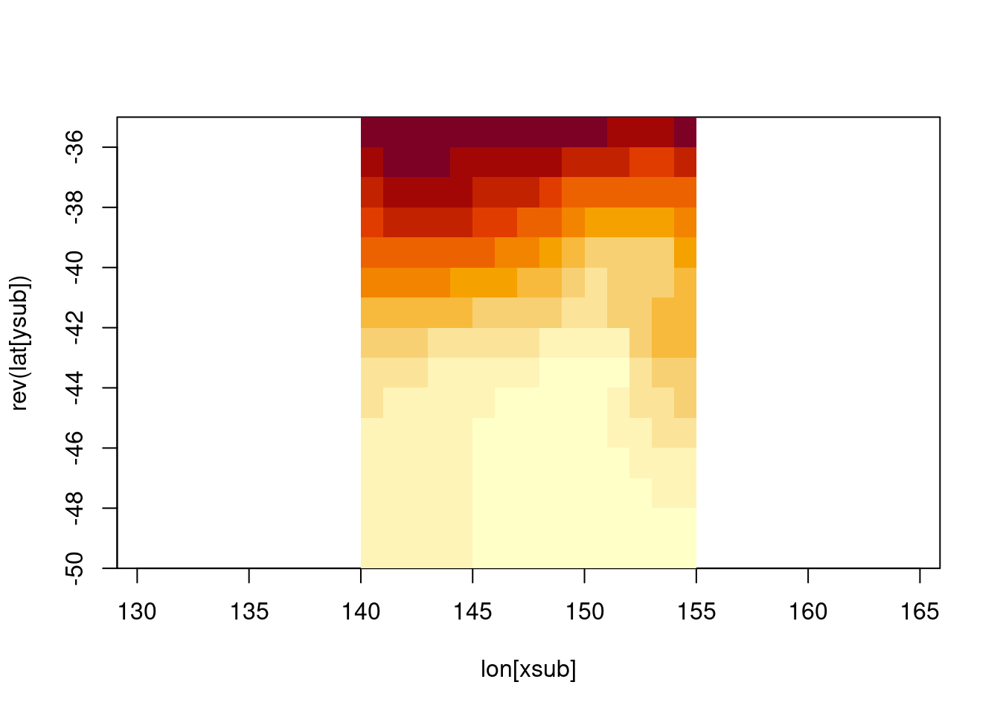

NOTE: this post has been resurrected from a 2017 post (April 2022).
This post is in-progress …
Two very important packages in R are rerddap and plotdap providing straightforward access to and visualization of time-varying gridded data sets. Traditionally this is handled by individuals who either have or quickly gain expert knowledge about the minute details regarding obtaining data sources, exploring and extracting data from them, manipulating the data for the required purpose and reporting results. Often this task is not the primary goal, it’s simply a requirement for comparison to environmental data or validation of direct measurements or modelled scenarios against independent data.
This is a complex area, it touches on big data, web services, complex and sophisticated multi-dimensional scientific data in array formats (primarily NetCDF), map projections, and data aesthetics or scaling methods by which data values are converted into visualizations.
R is not known to be strong in this area for handling large and complex array-based data, although it has had good support for every piece in the chain many of them were either not designed to work together or or languished without modernization for some time. There are many many approaches to bring it all together but unfortunately no concerted effort to sort it all out. What there is however is a very exciting and productive wave of experimentation and new packages to try, there’s a lot of exploration occurring and a lot of powerful new approaches.
This is extremely cool, there is a lot of exciting new support for these sometimes challenging sources of data. However, there is unfortunately no concerted vision for integration of multi-dimensional data into the tidyverse and many of the projects created for data getting and data extraction must include their own internal handlers for downloading and caching data sources and converting data into required forms. This is a complex area, but in some places it is harder and more complex than it really needs to be.
To put some guides in this discussion, the rest of this post is informed by the following themes.
the tidyverse is not just cool, it’s totally awesome (also provides a long-term foundation for the future)
“good software design” facilitates powerful APIs and strong useability: composable, orthogonal components and effortless exploration and workflow development
new abstractions are still to be found
The tidyverse is loudly loved and hated. Critics complain that they already understood long-form data frames and that constant effusive praise on twitter is really annoying. Supporters just sit agog at a constant stream of pointless shiny fashion parading before their eyes … I mean, they fall into a pit of success and never climb out. Developers who choose the tidyverse as framework for their work appreciate its seamless integration of database principles and actual databases, the consistent and systematic syntax of composable single-purpose functions with predictable return types, the modularization and abstractability of magrittr piping, and the exciting and disruptive impact of tidy evaluation seen clearly already in dplyr and family, but which will clearly make it very easy to traverse the boundary between being a user and being a developer. What could be a better environment for the future of science and research?
What about the rasters!
I’ve been using gridded data in R since 2002. I remember clearly learning about the use of the graphics::image function for visualizing 2D kernel density maps created using sm. I have a life-long shudder reflex at the heat.colors palette, and at KDE maps generally. I also remember my first encounter with the NetCDF format which would have looked exactly like this (after waiting half and hour to download this file).
library(RNetCDF)con <-open.nc(file.path(dp, sst.file))lon <-var.get.nc(con, "lon")lat <-var.get.nc(con, "lat")xlim <-c(140, 155)ylim <-c(-50, -35)xsub <- lon >= xlim[1] & lon <= xlim[2]ysub <- lat >= ylim[1] & lat <= ylim[2]tlim <-"oh just give up, it's too painful ..."time <-var.get.nc(con, "time")## you get the idea, who can be bothered indexing time as well these daysv <-var.get.nc(con, "sst", start =c(which(xsub)[1], length(ysub) -max(which(ysub)), length(time)), count =c(sum(xsub), sum(ysub), 1))image(lon[xsub], rev(lat[ysub]), v[nrow(v):1, ], asp =1/cos(42* pi/180))

What a hassle! Let’s just use raster. (These aren’t the same but I really don’t care about making sure the old way works, the new way is much better - when it works, which is mostly …).
library(raster)
Loading required package: sp
Attaching package: 'raster'
The following object is masked from 'package:dplyr':
select
## what time did you want?plot(crop(subset(b, nlayers(b) -c(1, 0)), extent(xlim, ylim), snap ="out"), col =heat.colors(12))
These are pretty cruddy data anyway, 1 degree resolution, weekly time steps? Come on man!
Why is this data set relevant? For a very long time the Optimally Interpolated Sea Surface Temperature data set, known fondly as Reynolds SST in some circles, was a very important touchstone for those working in marine animal tracking. From the earliest days of tuna tracking by (PDF): Northwest Pacific by light-level geo-locators, a regional or global data set of surface ocean temperatures was a critical comparison for tag-measured water temperatures. The strong and primarily zonal-gradients (i.e. varying by latitude, it gets cold as you move towards the poles) in the oceans provided an informative corrective to “light level geo-location” latitude estimates, especially when plagued by total zonal ambiguity (see Figure 12.3) around the equinoxes.
Today we can use much finer resoution blended products for the entire globe. Blended means it’s a combination of measured (remote-sensing, bucket off a ship) and modelled observations, that’s been interpolated to “fill gaps”. This is not a simple topic of course, remotely sensed temperatures must consider whether it is day or night, how windy it is, the presence of sea ice, and many other factors - but as a global science community we have developed to the point of delivering a single agreed data set for this property. And now that it’s 2017, you have the chance of downloading all 5000 or so daily files, the total is only 2000 Gb.
So nothing’s free right? You want high-resolution, you get a big download bill.
Web services for scientific array data
Ah, no - we don’t have to download every large data set. That’s where ERDDAP comes in!
This makes it easy, but I’m still not happy. In this code a raw NetCDF file is downloaded but is not readily useable by other processes, it’s not obvious how to connect directly to the source with NetCDF API, the raster data itself is turned into both a data frame, and turned into a grid ignoring irregularity in the coordinates, the raster is then resized and possibly reprojected, then turned into a polygon layer (eek) and finally delivered to the user as a very simple high level function that accepts standard grammar expressions of the tidyverse.
What follows is some raw but real examples of using an in-development package tidync in the hypertidy family. It’s very much work-in-progress, as is this blog post …
Please reach out to discuss any of this if you are interested!
info() output passed to x; setting base url to: https://upwell.pfeg.noaa.gov/erddap
#})f <-attr(murSST, "path")#unlink(f)## the murSST (it's a GHRSST L4 foundational SST product ) is an extremely detailed raster source, it's really the only## daily blended (remote sensing + model) and interpolated (no-missing values)## Sea Surface Temperature for global general usage that is high resolution.## The other daily blended product Optimally Interpolated (OISST) is only 0.25 degree resolution## The GHRSST product is available since 2002, whereas OISST is available since## 1981 (the start of the AVHRR sensor era)maxpixels <-50000dres <-c(mean(diff(sort(unique(murSST$data$lon)))), mean(diff(sort(unique(murSST$data$lat)))))library(raster)r <-raster(extent(range(murSST$data$lon) +c(-1, 1) * dres[1]/2, range(murSST$data$lat) +c(-1, 1) * dres[2]/2),res = dres, crs ="+init=epsg:4326")dim(r) <-dim(r)[1:2] %/%sqrt(ceiling(ncell(r) / maxpixels))dat <- murSST$data %>%mutate(bigcell =cellFromXY(r, cbind(lon, lat))) %>%group_by(time, bigcell) %>%summarize(analysed_sst =mean(analysed_sst, na.rm =FALSE)) %>%ungroup() %>%mutate(lon =xFromCell(r, bigcell), lat =yFromCell(r, bigcell))
`summarise()` has grouped output by 'time'. You can override using the
`.groups` argument.
r[] <-NAr[dat$bigcell] <- dat$analysed_sstnames(r) <-"analysed_sst"dat$bigcell <-NA#m <- sf::st_as_sf(maps::map("world", region = "USA"))bgMap <- sf::st_as_sf( maps::map('world', plot =FALSE, fill =TRUE))ggplot() +geom_sf(data = bgMap) +xlim(xmin(r), xmax(r)) +ylim(ymin(r), ymax(r)) +geom_raster(data = dat, aes(x = lon, y = lat, fill = analysed_sst))
## now, what happened before?#system.time({p <- sf::st_as_sf(raster::rasterToPolygons(r))})## should be a bit faster due to use of implicit coordinate meshsystem.time({p <- sf::st_as_sf(spex::polygonize(r, na.rm =TRUE))})
## looking ok, so let's go for gold!## specify just sst, otherwise we will get all four## hyper_tibble gets the raw arrays with ncvar_get(conn, start = , count = ) calls## then expands out the axes based on the values from the filtered axis tablessystem.time({ tab <- hf %>%hyper_tibble(select_var ="analysed_sst")})